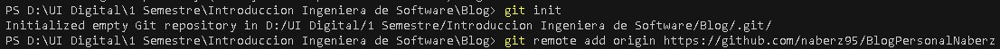
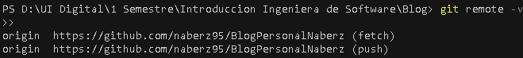
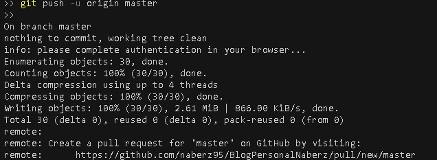
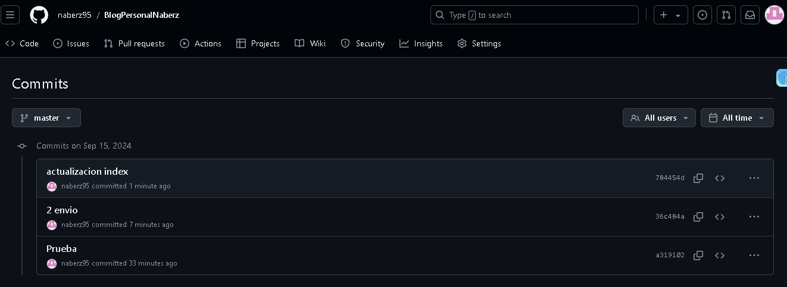
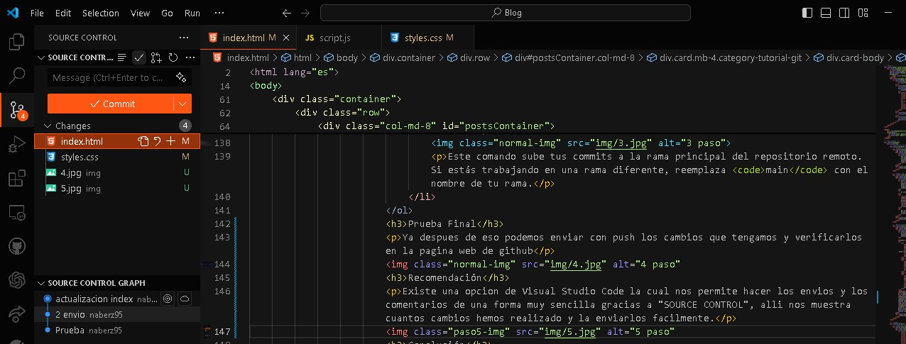

Bienvenidos a mi Blog
Nos alegra mucho tenerte aquí en NABZBLOG. Este blog nació como una tarea de introducción a la ingeniería, pero nuestra intención es seguir expandiendo y enriqueciendo el contenido con noticias e información sobre tecnología, desarrollo de software y muchos otros temas apasionantes. ¡Explora, aprende y únete a la conversación!

¿Qué es Git?
Git es un sistema de control de versiones distribuido que permite a los desarrolladores llevar un registro de los cambios en el código fuente durante el desarrollo de software. Es una herramienta fundamental para la colaboración en proyectos de programación, ya que facilita la gestión de versiones y la integración de contribuciones de diferentes colaboradores.
Al usar Git, puedes realizar las siguientes acciones:
- Controlar Versiones: Guardar y gestionar el historial de cambios en tu código fuente.
- Colaborar: Trabajar en equipo y fusionar cambios de diferentes desarrolladores.
- Crear Ramas: Desarrollar nuevas características o correcciones en ramas separadas, sin afectar el código principal.
- Gestionar Conflictos: Resolver conflictos que surgen cuando múltiples desarrolladores realizan cambios en el mismo archivo.
Git se utiliza en combinación con plataformas de hospedaje de código como GitHub, GitLab y Bitbucket, que proporcionan servicios de almacenamiento en la nube y facilitan la colaboración en proyectos de software.
Cómo Conectar tu Repositorio Local con GitHub
En este tutorial, aprenderás cómo conectar un repositorio local con un repositorio remoto en GitHub. Esto es útil cuando ya tienes un proyecto y deseas mantenerlo sincronizado con GitHub.
Pasos para Conectar tu Repositorio Local con GitHub
-
Conectar tu Repositorio Local con GitHub y creacion de la Rama
Lo primero es iniciar con git init
Para vincular tu repositorio local con un repositorio remoto existente en GitHub, usa el siguiente comando:
git remote add origin (Aqui añades la URL de tu proyecto de github en mi caso: https://github.com/naberz95/BlogPersonalNaberz)Este comando configura el repositorio remoto como `origin` en tu repositorio local.

-
Verificar la Conexión
Para asegurarte de que tu repositorio local está correctamente vinculado con el remoto, ejecuta:
git remote -vEste comando te mostrará las URLs de los repositorios remotos asociados a tu repositorio local.

-
Empujar tus Cambios al Repositorio Remoto
Para subir tus cambios locales al repositorio remoto en GitHub, utiliza el siguiente comando:
git push -u origin mainEste comando sube tus commits a la rama principal del repositorio remoto. Si estás trabajando en una rama diferente, reemplaza
maincon el nombre de tu rama.
Prueba Final
Ya despues de eso podemos enviar con push los cambios que tengamos y verificarlos en la pagina web de github
Recomendación
Existe una opcion de Visual Studio Code la cual nos permite hacer los envios y los comentarios de una forma muy sencilla gracias a "SOURCE CONTROL", alli nos muestra cuantos cambios hemos realizado y la enviarlos facilmente.
Conclusión
Conectar tu repositorio local con un repositorio remoto en GitHub es crucial para colaborar con otros y mantener tu código seguro. Con los pasos anteriores, deberías estar listo para gestionar tu código y colaborar en proyectos de manera efectiva. Para más detalles, consulta la documentación oficial de Git.

Creación de Branches en Git
En Git, las ramas (o branches) son una característica poderosa que te permite trabajar en diferentes versiones de tu proyecto simultáneamente. Las ramas te permiten desarrollar nuevas funcionalidades, corregir errores o experimentar con nuevas ideas sin afectar la rama principal del proyecto.
¿Por qué usar ramas?
- Desarrollo paralelo: Permite a varios desarrolladores trabajar en diferentes características o correcciones de manera simultánea.
- Pruebas: Puedes probar nuevas ideas sin afectar la estabilidad de la rama principal.
- Gestión de versiones: Facilita la integración de diferentes versiones y cambios en el proyecto.
Ejemplo práctico: Supongamos que estás trabajando en un proyecto y necesitas añadir una nueva funcionalidad. Primero, crea una nueva rama para desarrollar esta funcionalidad:
git checkout -b creacionNuevaRama
Esto crea una nueva rama llamada creacionNuevaRama y cambia a esa rama. Después de realizar los cambios y confirmar tus modificaciones en esta rama, puedes fusionarla (merge) con la rama principal:


El comando git merge integra los cambios de la rama creacionNuevaRama en la rama principal master. Si hay conflictos, Git te pedirá que los resuelvas antes de completar la fusión.


Las ramas en Git son esenciales para mantener un flujo de trabajo organizado y eficiente. Utilízalas para experimentar, desarrollar y colaborar en tus proyectos con mayor facilidad.

¿Qué es el Hardware?
El Hardware es un conjunto de materiales tangibles de un computador o de un sistema informatico,este viene de la palabra HARD ( rigido ) y WARE ( material ) es decir material rigido, este incluye todas las partes mecanicas,electricas y electronicas.
El termino empezo a usarse a en el siglo XV para los utensilios y herramientas fabricados con metales duras, hoy en dia desde el surgimiento de las computadoras en la decada de 1940 se empezo a denominar hardware a los componentes fisicos para distinguinlos de los logicos.
Para que sirve?
El hardware sirve para facilitarnos el procesamiento de la informacion y tener acceso al software del equipo, este puente intermedio entre el equipo y el usuario nos permite emitir las ordenes necesarias para que el equipo realice las tareas que deseamos hacer, sin el hardware no podriamos hacer uso de las aplicaciones y programas que necesitamos para trabajar, estudiar o entretenernos.

Tipos de Hardware
Como vimos en una entrada anterior ya miramos lo que es el Hardware,de donde proviene y para que sirve,ahora en esta entrada vamos a ver que existes diferentes tipos de hardware y como se clasifican, estas clasificaciones surgen dependiendo del uso que se les da a cada uno siendo estos los mas comunes y en los que categorizamos el hardware:
Tipos de Hardware
Existen Diferentes tipos de Hardware,pero en este blog las organizaremos en 4 categorias principales:
- Dispositivos De Salida
- Dispositivos De Entrada
- Componentes Internos
- Dispositivos de Almacenamiento

Dispositivos de Salida
Los Dispositivos de salida o tambien conocidos como perifericos de entrada ( OUTPUT) son aquellos aparatos que permiten la extracion de informacion de las computadoras o sistemas informaticos,estos traducen la informacion a formatos visuales,sonoros, impresos o de cualquier naturaleza y que puedan ser comprendidos por el usuario.
Caracteristicas:
- Son elementos Externos que se pueden conectar al equipo ya sea de forma alambrica o inalambrica.
- Replican informacion como audio,imagen,textos y graficos.
- suelen ser imprescindibles para el uso del equipo.
- Son faciles de usar y se van actualizando de acuerdo a los desarrollos Tecnologicos.

Dispositivos de Entrada
Los dispositivos de entrada o de alimentacion (imput) son aquellos que permiten ingresar informacion al sistema,ya sea proviniente del usuario o de otra computadora, estos dispositivos envian impulsos electricos que luego la computadora procesa y almacena,Estos son fundamentales para que poder interactuar con la computadora.
Caracteristicas:
- Permiten ingresar informacion en distintos formatos como audio,imagen,textos,entre otros.
- traducen todos los datos por medio de impulsos.
- Son indispensables para el uso de la computadora y faciles de usar.
- Se adaptan deacuerdo a los diferentes desarrollos tecnologicos.

Componentes Internos
Los componentes internos de un computador son aquellos que se encuentran "dentro" del CPU y su funcionanmiento es totalmente esencial para el correcto uso del sistema informatico.
- Dentro de los componentes internos encontramos:
Es la tarjeta principal de la CPU en donde se encuentra el procesador,las ranuras de la memoria RAM, los modulos ROM, y donde se conectan los demas componentes.
Es in circuito electronico que actua como el cerebro logico y aritmetico de la computadora,en este es donde se lleva a cabo los calculos que sostienen el software entero,es reconocible porque esta debajo del disipador o ventilador ya que necesitan refrigeracion constante para evitar sobrecarga.
Random Access Memorys o memoria de acceso aleatorio son una serie de modulos que se conectan a la placa base,en donde van los programas a ejecutarse tanto los activados por el equipo como los activados por el sistema,todo lo que se encuentre en la memoria RAM se borrara cuando el sistema se apague o se reinicie.

Dispositivos de Almacenamiento
Los dispositivos de almacenamiento son una parte integral del hardware de un computador, y se encargan de guardar de forma permanente o temporal todos los datos y programas. Estos dispositivos permiten que la información se guarde y se recupere en cualquier momento, siendo esenciales para la operatividad del sistema. Existen varios tipos de dispositivos de almacenamiento, cada uno con características y usos específicos:
- Disco Duro (HDD): El disco duro es el dispositivo de almacenamiento más común y tradicional. Funciona mediante platos giratorios y un cabezal de lectura/escritura magnético. Es ideal para almacenar grandes cantidades de datos, como archivos del sistema operativo, programas y documentos personales.
- Unidad de Estado Sólido (SSD): Las unidades de estado sólido son dispositivos de almacenamiento que utilizan memoria flash en lugar de discos giratorios. Son mucho más rápidas que los discos duros tradicionales, permitiendo tiempos de arranque más cortos y una mejor velocidad en la ejecución de programas. Además, son más resistentes a los golpes y consumen menos energía.
- Unidades Ópticas (CD/DVD/Blu-ray): Aunque menos comunes hoy en día, las unidades ópticas permiten leer y escribir datos en discos ópticos como CDs, DVDs o Blu-rays. Son útiles para almacenar datos de respaldo, archivos multimedia, o para distribuir software.
- Memorias USB y Tarjetas de Memoria: Estos dispositivos portátiles son muy convenientes para el almacenamiento temporal y la transferencia de archivos entre diferentes dispositivos. Las memorias USB, en particular, han revolucionado la manera en que manejamos y transportamos nuestros datos.

¿Qué es el Software?
El software es el conjunto de instrucciones, datos o programas utilizados para operar computadoras y ejecutar tareas específicas. A diferencia del hardware, que es el componente físico del computador, el software es intangible. Es lo que permite que el hardware realice funciones determinadas, como ejecutar aplicaciones, navegar por internet o jugar videojuegos.
El software se puede dividir en dos categorías principales: software de sistema y software de aplicación. El software de sistema incluye los programas que son fundamentales para que el hardware funcione, como los sistemas operativos (por ejemplo, Windows, macOS, Linux) y los controladores de dispositivos. El software de aplicación, por otro lado, incluye programas diseñados para realizar tareas específicas para el usuario final, como procesadores de texto, navegadores web, y aplicaciones móviles.

Tipos de Software
Existen diferentes tipos de software, cada uno diseñado para cumplir con funciones específicas dentro del ecosistema de una computadora. A continuación, se describen los tipos más comunes:
- Software del Sistema: Este tipo de software incluye el sistema operativo y todos los programas que permiten que el hardware funcione y se comunique con otros programas. El sistema operativo, como Windows o Linux, es el encargado de gestionar los recursos del hardware y proporcionar una interfaz para que los usuarios interactúen con el sistema.
- Software de Aplicación: Este software se utiliza para realizar tareas específicas que no están directamente relacionadas con el funcionamiento del hardware. Ejemplos incluyen procesadores de texto, hojas de cálculo, programas de diseño gráfico, navegadores web, y aplicaciones móviles.
- Software de Programación: El software de programación incluye herramientas que los desarrolladores utilizan para crear otros programas. Estos incluyen editores de código, compiladores, intérpretes y depuradores. Lenguajes de programación como Python, Java, y C++ son utilizados para escribir el software que después es ejecutado por el hardware.

Desarrollo De Software
El desarrollo de software es el proceso de diseñar, crear, implementar y mantener aplicaciones y otros tipos de software. Este proceso implica un conjunto de actividades que transforman los requisitos del usuario en un producto final que puede ser utilizado en diferentes plataformas y dispositivos. El desarrollo de software es una disciplina clave en la informática y requiere conocimientos en programación, diseño de software, y gestión de proyectos.

Etapas del Desarrollo de Software
El desarrollo de software sigue un ciclo de vida estructurado conocido como el Ciclo de Vida del Desarrollo de Software (SDLC, por sus siglas en inglés). Este ciclo se compone de varias etapas, cada una crucial para garantizar que el software final cumpla con los requisitos y expectativas del usuario:
- Análisis de Requisitos: En esta etapa se identifican y documentan las necesidades y expectativas del usuario. El objetivo es obtener una comprensión clara de lo que el software debe hacer.
- Diseño del Software: Aquí se define la arquitectura del software, se diseñan las interfaces de usuario, y se establecen las bases para la estructura de datos y algoritmos que se implementarán.
- Desarrollo o Codificación: Esta es la fase en la que se escribe el código fuente del software utilizando un lenguaje de programación adecuado. Los desarrolladores traducen el diseño en un lenguaje que la computadora pueda entender.
- Pruebas o Verificación: Una vez desarrollado el software, es necesario realizar pruebas para asegurarse de que cumple con los requisitos y no contiene errores. Las pruebas pueden incluir pruebas unitarias, de integración, y de aceptación por parte del usuario.
- Documentación: La documentación es esencial para asegurar que otros desarrolladores, usuarios finales, y personal de soporte puedan entender y utilizar el software correctamente. Incluye manuales de usuario, guías de instalación, y documentación técnica.
- Mantenimiento: Después de que el software se entrega y se despliega, se realiza el mantenimiento para corregir errores que no se detectaron durante las pruebas, y para actualizar el software en respuesta a cambios en el entorno o nuevas necesidades del usuario.

Primeros Programas y Tarjetas Perforadas
Los primeros programas de computadoras se codificaban utilizando tarjetas perforadas. Estas tarjetas contenían una serie de perforaciones que representaban las instrucciones que la computadora debía seguir.
- El origen: Las tarjetas perforadas se utilizaron inicialmente en máquinas de telar y luego fueron adaptadas para el uso en computadoras. Cada tarjeta representaba una línea de código o datos.
- Proceso de programación: Los programadores perforaban las tarjetas siguiendo un patrón específico que la máquina podía leer. El proceso era meticuloso y propenso a errores, ya que cualquier perforación incorrecta podía causar fallos en el programa.
- Evolución: Con el tiempo, las tarjetas perforadas fueron reemplazadas por métodos más avanzados de programación, pero su legado sigue siendo un hito en la historia de la computación.
Pioneras en la Programación
En los primeros días de la computación, las mujeres jugaron un papel crucial como programadoras. Entre ellas se encuentran figuras legendarias que contribuyeron de manera significativa al desarrollo de la programación:
- Ada Lovelace: Conocida como la primera programadora de la historia, escribió el primer algoritmo destinado a ser procesado por una máquina, la Máquina Analítica de Charles Babbage.
- Las programadoras de ENIAC: Un grupo de seis mujeres fue responsable de programar la ENIAC, la primera computadora electrónica de propósito general. Ellas desarrollaron programas complejos sin contar con un lenguaje de programación moderno.
- Impacto: Estas pioneras no solo allanaron el camino para futuras generaciones de mujeres en la tecnología, sino que también establecieron las bases de la programación como la conocemos hoy.
La Revolución de los Transistores
Los transistores marcaron un antes y un después en la historia de la computación. Inventados en 1947, revolucionaron la electrónica y sentaron las bases para la era moderna de las computadoras.
- ¿Qué es un transistor?: Un transistor es un dispositivo semiconductor que puede amplificar o conmutar señales electrónicas. Reemplazó a las válvulas de vacío, permitiendo la creación de computadoras más pequeñas, rápidas y eficientes.
- Impacto en la computación: Los transistores hicieron posible la miniaturización de los componentes electrónicos, lo que a su vez permitió el desarrollo de microprocesadores y circuitos integrados.
- La base de la modernidad: Hoy en día, los transistores son un componente fundamental en prácticamente todos los dispositivos electrónicos, desde computadoras hasta teléfonos móviles.